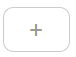

Create Local component
this button is used to create components within the component / project. If the project is not a component, this button will not be visible.
To add local components that are not subcomponents, you can:
After clicking on the Create button, a prompt dialog box will appear asking you for the name of the local component. The local component name cannot have the following characters: - Use the upload button
- Importing a global component from their section using the  button
- By adding it to the tilepieces.project.json file for the current project
/\?%*:|"<>A folder will be create under project property "componentPath" + component name
If you write the name of an already existing component, it will be overwritten.
If you write the name of an already existing component, it will be overwritten.
Upload a local component
By clicking on this button it will be possible to choose a zip file that contains a component.
Export a local component
Clicking on this button will generate a zip file containing the selected local components.
Local components
This section will show all the local components in alphabetical order.
Set local subcomponent
a view equal to the one present in component properties will open in which it will be possible to modify the properties of the component.
Add local subcomponent
clicking on this button it will be possible to add a sub-component as seen in 'create local component'.
Delete local subcomponent
clicking on this button it will be possible to delete the component. By default, the folder will not be deleted unless the corresponding project property is changed.